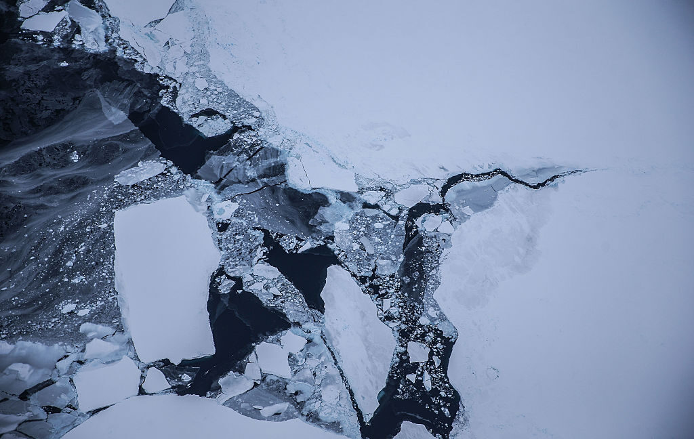

Technology · 29 Oct 2026
A hidden ocean change near Antarctica could have global consequences

Antarctic waters are getting saltier as sea-ice loss reshapes ocean circulation.
Multiple independent publishers are reporting on the same development: A hidden ocean change near Antarctica could have global consequences.
The available reports place the development in the Technology category. The accounts were compared for agreement on the central event rather than simply shared names or broad topics.
One of the available reports describes the development this way: Antarctic waters are getting saltier as sea-ice loss reshapes ocean circulation.
Readers should consult the linked source reports for additional context, updates and details that may change as the story develops.
Sources
This article was produced by the C. O. Eric AI Newsroom from the cited sources. It is published only after automated evidence and safety checks.